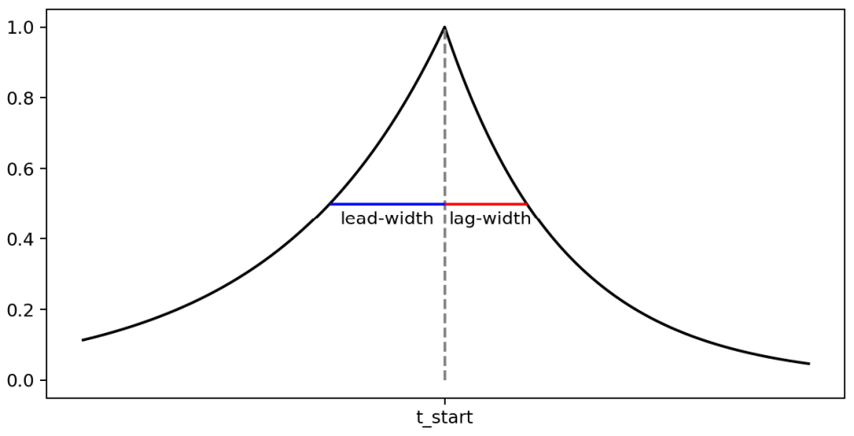

gloria.Exponential#
- class gloria.Exponential(*, lead_width, lag_width)[source]#
A two-sided exponential decay shaped event.
For a given time \(t\) the event can be described by
\[f(t) = \exp\left( -\log 2 \left|\frac{t-t_0}{w\left(t\right)}\right| \right).\]Here, \(w\left(t\right) = w_\text{lead}\) is the left-sided lead-width for \(t<t_0\) and \(w\left(t\right) = w_\text{lag}\) is the right-sided lag-width for \(t\ge t_0\), set by
lead_widthandlag_widthin the constructor, respectively. The parametert_start=t_0is an input ofgenerate(). The following plot illustrates the two-sided exponential decay function.- Parameters:
lead_width (
pandas.Timedelta| str) – Temporal left-sided lead-width of the exponential function given aspandas.Timedeltaor string representing such.lag_width (
pandas.Timedelta| str) – Temporal right-sided lag-width of the exponential function given aspandas.Timedeltaor string representing such.
Methods
- classmethod from_dict(event_dict)[source]#
Creates a Exponential object from a dictionary.
The key-value pairs of the dictionary must correspond to the constructor arguments of the event.
- generate(timestamps, t_start)[source]#
Generate a time series with a single Exponential event.
- Parameters:
timestamps (
pandas.Series) – The input timestamps at which the Exponential event is to be evaluated.t_start (
pandas.Timestamp) – Location of the Exponential event’s mode.self (Self)
- Returns:
The output time series including the Exponential event with amplitude 1.
- Return type:
{kind=link}